Page 2
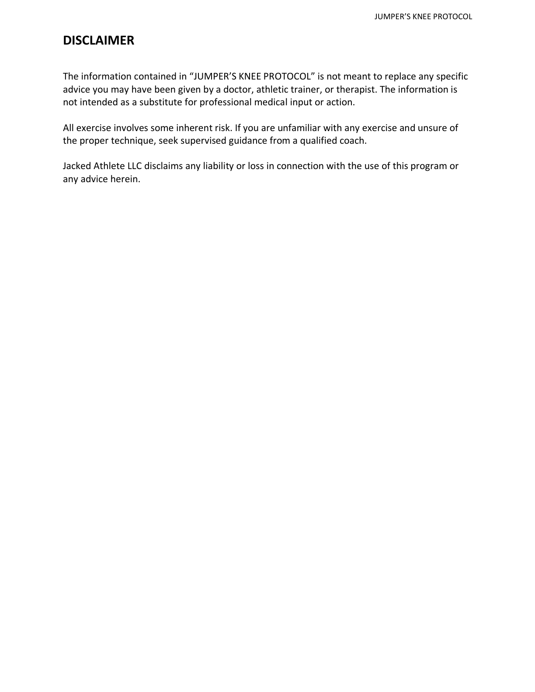
Extracted Text
JUMPER’S KNEE PROTOCOL
DISCLAIMER
The information contained in “JUMPER’S KNEE PROTOCOL” is not meant to replace any specific
advice you may have been given by a doctor, athletic trainer, or therapist. The information is
not intended as a substitute for professional medical input or action.
All exercise involves some inherent risk. If you are unfamiliar with any exercise and unsure of
the proper technique, seek supervised guidance from a qualified coach.
Jacked Athlete LLC disclaims any liability or loss in connection with the use of this program or
any advice herein.
Page 3
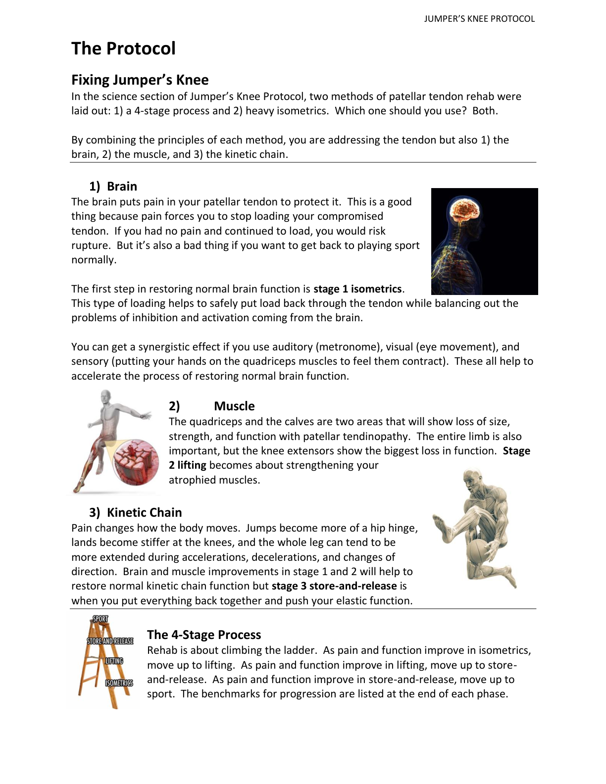
Extracted Text
JUMPER’S KNEE PROTOCOL
The Protocol
Fixing Jumper’s Knee
In the science section of Jumper’s Knee Protocol, two methods of patellar tendon rehab were
laid out: 1) a 4-stage process and 2) heavy isometrics. Which one should you use? Both.
By combining the principles of each method, you are addressing the tendon but also 1) the
brain, 2) the muscle, and 3) the kinetic chain.
1) Brain
The brain puts pain in your patellar tendon to protect it. This is a good
thing because pain forces you to stop loading your compromised
tendon. If you had no pain and continued to load, you would risk
rupture. But it’s also a bad thing if you want to get back to playing sport
normally.
The first step in restoring normal brain function is stage 1 isometrics.
This type of loading helps to safely put load back through the tendon while balancing out the
problems of inhibition and activation coming from the brain.
You can get a synergistic effect if you use auditory (metronome), visual (eye movement), and
sensory (putting your hands on the quadriceps muscles to feel them contract). These all help to
accelerate the process of restoring normal brain function.
2)
Muscle
The quadriceps and the calves are two areas that will show loss of size,
strength, and function with patellar tendinopathy. The entire limb is also
important, but the knee extensors show the biggest loss in function. Stage
2 lifting becomes about strengthening your
atrophied muscles.
3) Kinetic Chain
Pain changes how the body moves. Jumps become more of a hip hinge,
lands become stiffer at the knees, and the whole leg can tend to be
more extended during accelerations, decelerations, and changes of
direction. Brain and muscle improvements in stage 1 and 2 will help to
restore normal kinetic chain function but stage 3 store-and-release is
when you put everything back together and push your elastic function.
The 4-Stage Process
Rehab is about climbing the ladder. As pain and function improve in isometrics,
move up to lifting. As pain and function improve in lifting, move up to store-
and-release. As pain and function improve in store-and-release, move up to
sport. The benchmarks for progression are listed at the end of each phase.
Embedded Images
Page 4
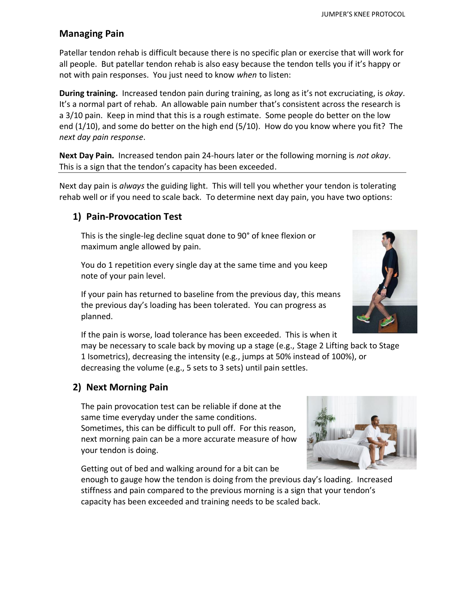
Extracted Text
JUMPER’S KNEE PROTOCOL
Managing Pain
Patellar tendon rehab is difficult because there is no specific plan or exercise that will work for
all people. But patellar tendon rehab is also easy because the tendon tells you if it’s happy or
not with pain responses. You just need to know when to listen:
During training. Increased tendon pain during training, as long as it’s not excruciating, is okay.
It’s a normal part of rehab. An allowable pain number that’s consistent across the research is
a 3/10 pain. Keep in mind that this is a rough estimate. Some people do better on the low
end (1/10), and some do better on the high end (5/10). How do you know where you fit? The
next day pain response.
Next Day Pain. Increased tendon pain 24-hours later or the following morning is not okay.
This is a sign that the tendon’s capacity has been exceeded.
Next day pain is always the guiding light. This will tell you whether your tendon is tolerating
rehab well or if you need to scale back. To determine next day pain, you have two options:
1) Pain-Provocation Test
This is the single-leg decline squat done to 90° of knee flexion or
maximum angle allowed by pain.
You do 1 repetition every single day at the same time and you keep
note of your pain level.
If your pain has returned to baseline from the previous day, this means
the previous day’s loading has been tolerated. You can progress as
planned.
If the pain is worse, load tolerance has been exceeded. This is when it
may be necessary to scale back by moving up a stage (e.g., Stage 2 Lifting back to Stage
1 Isometrics), decreasing the intensity (e.g., jumps at 50% instead of 100%), or
decreasing the volume (e.g., 5 sets to 3 sets) until pain settles.
2) Next Morning Pain
The pain provocation test can be reliable if done at the
same time everyday under the same conditions.
Sometimes, this can be difficult to pull off. For this reason,
next morning pain can be a more accurate measure of how
your tendon is doing.
Getting out of bed and walking around for a bit can be
enough to gauge how the tendon is doing from the previous day’s loading. Increased
stiffness and pain compared to the previous morning is a sign that your tendon’s
capacity has been exceeded and training needs to be scaled back.
Embedded Images
Page 5
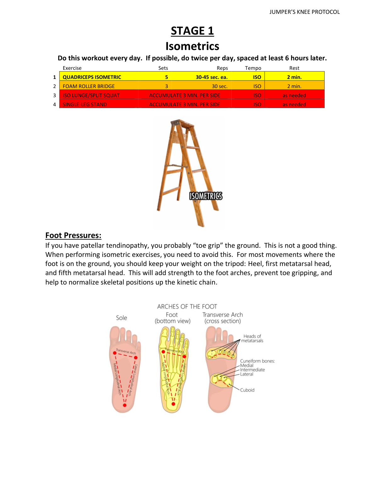
Extracted Text
JUMPER’S KNEE PROTOCOL
STAGE 1
Isometrics
Do this workout every day. If possible, do twice per day, spaced at least 6 hours later.
Exercise
Sets
Reps
Tempo
Rest
1
QUADRICEPS ISOMETRIC
5
30-45 sec. ea.
ISO
2 min.
2
FOAM ROLLER BRIDGE
3
30 sec.
ISO
2 min.
3
ISO LUNGE/SPLIT SQUAT
ACCUMULATE 3 MIN. PER SIDE
ISO
as needed
4
SINGLE-LEG STAND
ACCUMULATE 3 MIN. PER SIDE
ISO
as needed
Foot Pressures:
If you have patellar tendinopathy, you probably “toe grip” the ground. This is not a good thing.
When performing isometric exercises, you need to avoid this. For most movements where the
foot is on the ground, you should keep your weight on the tripod: Heel, first metatarsal head,
and fifth metatarsal head. This will add strength to the foot arches, prevent toe gripping, and
help to normalize skeletal positions up the kinetic chain.
Embedded Images
Page 6
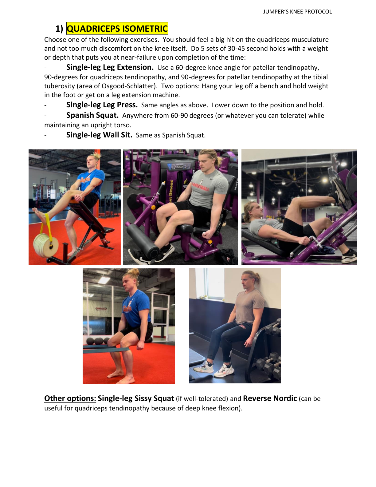
Extracted Text
JUMPER’S KNEE PROTOCOL
1) QUADRICEPS ISOMETRIC
Choose one of the following exercises. You should feel a big hit on the quadriceps musculature
and not too much discomfort on the knee itself. Do 5 sets of 30-45 second holds with a weight
or depth that puts you at near-failure upon completion of the time:
-
Single-leg Leg Extension. Use a 60-degree knee angle for patellar tendinopathy,
90-degrees for quadriceps tendinopathy, and 90-degrees for patellar tendinopathy at the tibial
tuberosity (area of Osgood-Schlatter). Two options: Hang your leg off a bench and hold weight
in the foot or get on a leg extension machine.
-
Single-leg Leg Press. Same angles as above. Lower down to the position and hold.
-
Spanish Squat. Anywhere from 60-90 degrees (or whatever you can tolerate) while
maintaining an upright torso.
-
Single-leg Wall Sit. Same as Spanish Squat.
Other options: Single-leg Sissy Squat (if well-tolerated) and Reverse Nordic (can be
useful for quadriceps tendinopathy because of deep knee flexion).
Embedded Images
Page 7
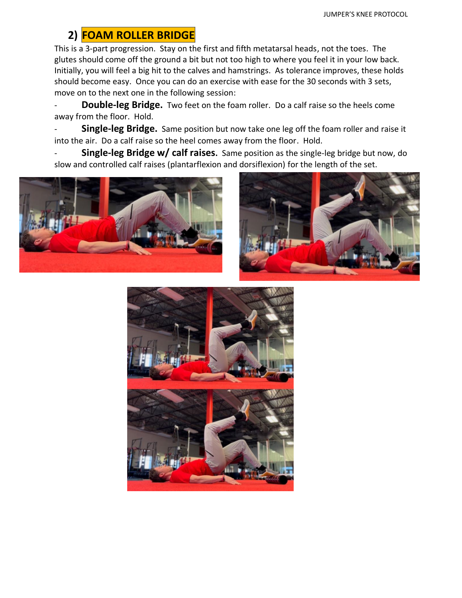
Extracted Text
JUMPER’S KNEE PROTOCOL
2) FOAM ROLLER BRIDGE
This is a 3-part progression. Stay on the first and fifth metatarsal heads, not the toes. The
glutes should come off the ground a bit but not too high to where you feel it in your low back.
Initially, you will feel a big hit to the calves and hamstrings. As tolerance improves, these holds
should become easy. Once you can do an exercise with ease for the 30 seconds with 3 sets,
move on to the next one in the following session:
-
Double-leg Bridge. Two feet on the foam roller. Do a calf raise so the heels come
away from the floor. Hold.
-
Single-leg Bridge. Same position but now take one leg off the foam roller and raise it
into the air. Do a calf raise so the heel comes away from the floor. Hold.
-
Single-leg Bridge w/ calf raises. Same position as the single-leg bridge but now, do
slow and controlled calf raises (plantarflexion and dorsiflexion) for the length of the set.
Embedded Images
Page 8
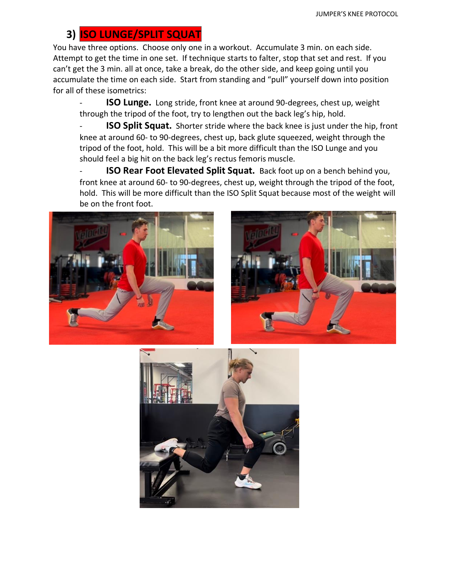
Extracted Text
JUMPER’S KNEE PROTOCOL
3) ISO LUNGE/SPLIT SQUAT
You have three options. Choose only one in a workout. Accumulate 3 min. on each side.
Attempt to get the time in one set. If technique starts to falter, stop that set and rest. If you
can’t get the 3 min. all at once, take a break, do the other side, and keep going until you
accumulate the time on each side. Start from standing and “pull” yourself down into position
for all of these isometrics:
-
ISO Lunge. Long stride, front knee at around 90-degrees, chest up, weight
through the tripod of the foot, try to lengthen out the back leg’s hip, hold.
-
ISO Split Squat. Shorter stride where the back knee is just under the hip, front
knee at around 60- to 90-degrees, chest up, back glute squeezed, weight through the
tripod of the foot, hold. This will be a bit more difficult than the ISO Lunge and you
should feel a big hit on the back leg’s rectus femoris muscle.
-
ISO Rear Foot Elevated Split Squat. Back foot up on a bench behind you,
front knee at around 60- to 90-degrees, chest up, weight through the tripod of the foot,
hold. This will be more difficult than the ISO Split Squat because most of the weight will
be on the front foot.
Embedded Images
Page 9
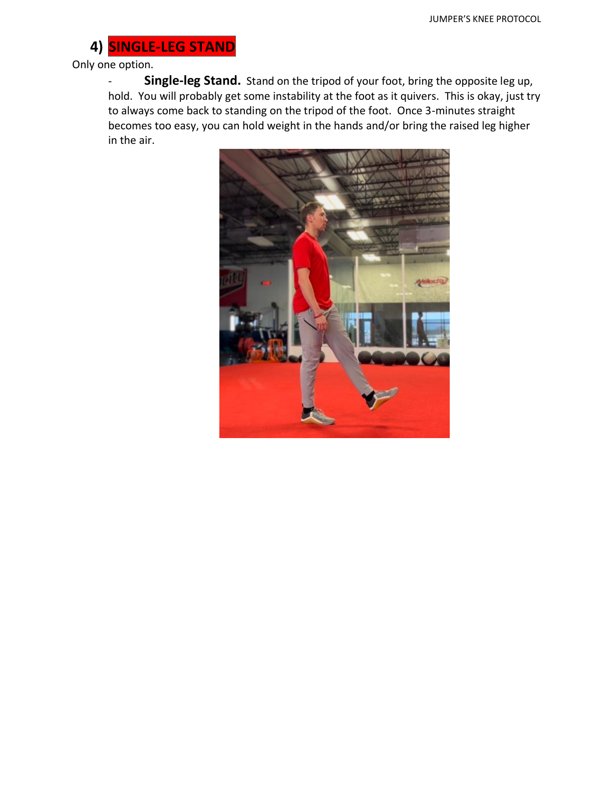
Extracted Text
JUMPER’S KNEE PROTOCOL
4) SINGLE-LEG STAND
Only one option.
-
Single-leg Stand. Stand on the tripod of your foot, bring the opposite leg up,
hold. You will probably get some instability at the foot as it quivers. This is okay, just try
to always come back to standing on the tripod of the foot. Once 3-minutes straight
becomes too easy, you can hold weight in the hands and/or bring the raised leg higher
in the air.
Embedded Images
Page 10
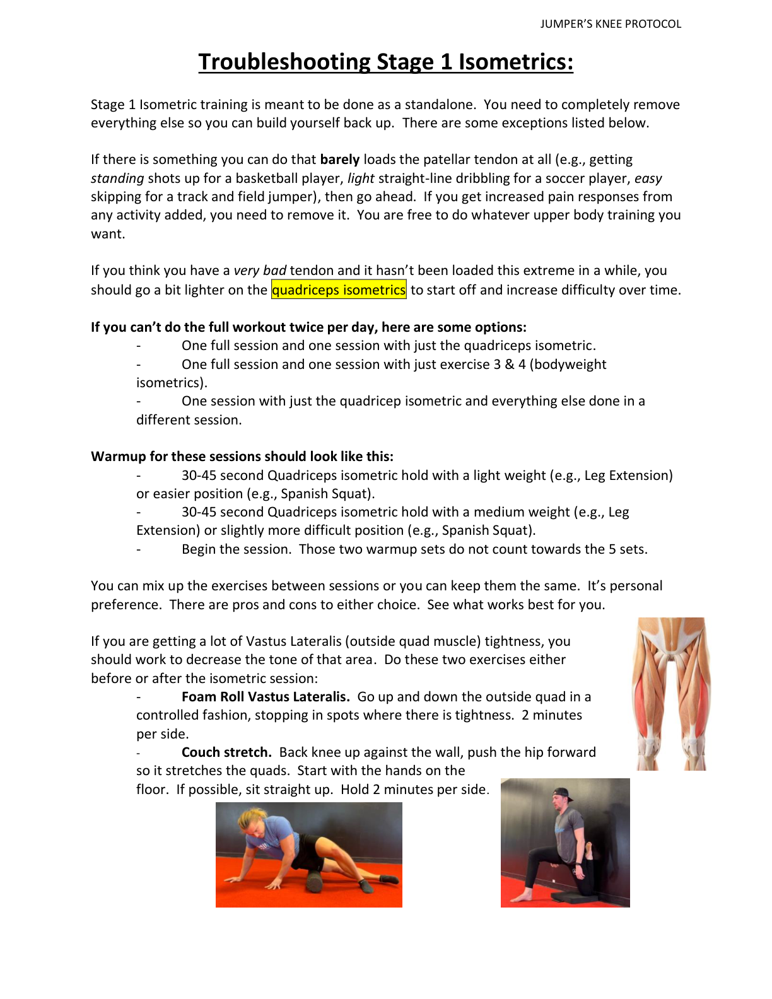
Extracted Text
JUMPER’S KNEE PROTOCOL
Troubleshooting Stage 1 Isometrics:
Stage 1 Isometric training is meant to be done as a standalone. You need to completely remove
everything else so you can build yourself back up. There are some exceptions listed below.
If there is something you can do that barely loads the patellar tendon at all (e.g., getting
standing shots up for a basketball player, light straight-line dribbling for a soccer player, easy
skipping for a track and field jumper), then go ahead. If you get increased pain responses from
any activity added, you need to remove it. You are free to do whatever upper body training you
want.
If you think you have a very bad tendon and it hasn’t been loaded this extreme in a while, you
should go a bit lighter on the quadriceps isometrics to start off and increase difficulty over time.
If you can’t do the full workout twice per day, here are some options:
-
One full session and one session with just the quadriceps isometric.
-
One full session and one session with just exercise 3 & 4 (bodyweight
isometrics).
-
One session with just the quadricep isometric and everything else done in a
different session.
Warmup for these sessions should look like this:
-
30-45 second Quadriceps isometric hold with a light weight (e.g., Leg Extension)
or easier position (e.g., Spanish Squat).
-
30-45 second Quadriceps isometric hold with a medium weight (e.g., Leg
Extension) or slightly more difficult position (e.g., Spanish Squat).
-
Begin the session. Those two warmup sets do not count towards the 5 sets.
You can mix up the exercises between sessions or you can keep them the same. It’s personal
preference. There are pros and cons to either choice. See what works best for you.
If you are getting a lot of Vastus Lateralis (outside quad muscle) tightness, you
should work to decrease the tone of that area. Do these two exercises either
before or after the isometric session:
-
Foam Roll Vastus Lateralis. Go up and down the outside quad in a
controlled fashion, stopping in spots where there is tightness. 2 minutes
per side.
-
Couch stretch. Back knee up against the wall, push the hip forward
so it stretches the quads. Start with the hands on the
floor. If possible, sit straight up. Hold 2 minutes per side.
Embedded Images
Page 11
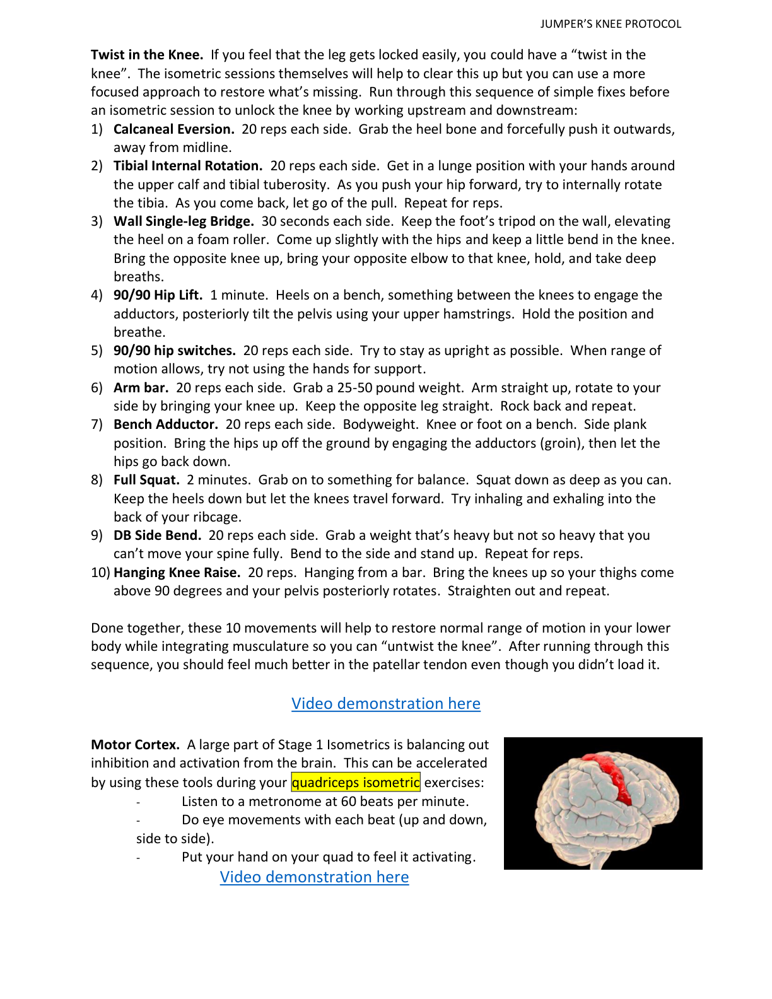
Extracted Text
JUMPER’S KNEE PROTOCOL
Twist in the Knee. If you feel that the leg gets locked easily, you could have a “twist in the
knee”. The isometric sessions themselves will help to clear this up but you can use a more
focused approach to restore what’s missing. Run through this sequence of simple fixes before
an isometric session to unlock the knee by working upstream and downstream:
1) Calcaneal Eversion. 20 reps each side. Grab the heel bone and forcefully push it outwards,
away from midline.
2) Tibial Internal Rotation. 20 reps each side. Get in a lunge position with your hands around
the upper calf and tibial tuberosity. As you push your hip forward, try to internally rotate
the tibia. As you come back, let go of the pull. Repeat for reps.
3) Wall Single-leg Bridge. 30 seconds each side. Keep the foot’s tripod on the wall, elevating
the heel on a foam roller. Come up slightly with the hips and keep a little bend in the knee.
Bring the opposite knee up, bring your opposite elbow to that knee, hold, and take deep
breaths.
4) 90/90 Hip Lift. 1 minute. Heels on a bench, something between the knees to engage the
adductors, posteriorly tilt the pelvis using your upper hamstrings. Hold the position and
breathe.
5) 90/90 hip switches. 20 reps each side. Try to stay as upright as possible. When range of
motion allows, try not using the hands for support.
6) Arm bar. 20 reps each side. Grab a 25-50 pound weight. Arm straight up, rotate to your
side by bringing your knee up. Keep the opposite leg straight. Rock back and repeat.
7) Bench Adductor. 20 reps each side. Bodyweight. Knee or foot on a bench. Side plank
position. Bring the hips up off the ground by engaging the adductors (groin), then let the
hips go back down.
8) Full Squat. 2 minutes. Grab on to something for balance. Squat down as deep as you can.
Keep the heels down but let the knees travel forward. Try inhaling and exhaling into the
back of your ribcage.
9) DB Side Bend. 20 reps each side. Grab a weight that’s heavy but not so heavy that you
can’t move your spine fully. Bend to the side and stand up. Repeat for reps.
10) Hanging Knee Raise. 20 reps. Hanging from a bar. Bring the knees up so your thighs come
above 90 degrees and your pelvis posteriorly rotates. Straighten out and repeat.
Done together, these 10 movements will help to restore normal range of motion in your lower
body while integrating musculature so you can “untwist the knee”. After running through this
sequence, you should feel much better in the patellar tendon even though you didn’t load it.
Video demonstration here
Motor Cortex. A large part of Stage 1 Isometrics is balancing out
inhibition and activation from the brain. This can be accelerated
by using these tools during your quadriceps isometric exercises:
-
Listen to a metronome at 60 beats per minute.
-
Do eye movements with each beat (up and down,
side to side).
-
Put your hand on your quad to feel it activating.
Video demonstration here
Embedded Images
Page 12
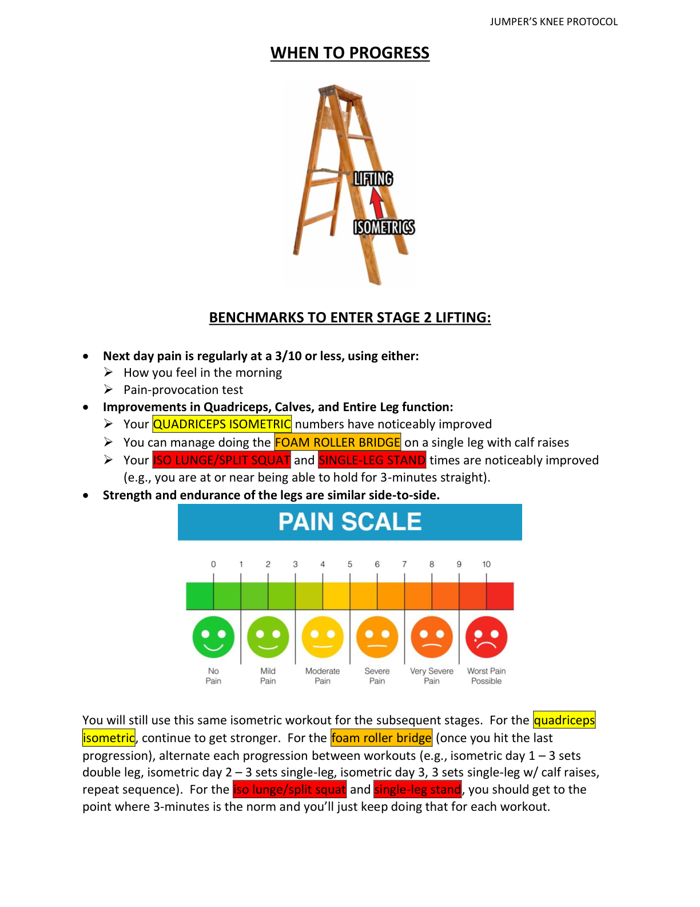
Extracted Text
JUMPER’S KNEE PROTOCOL
WHEN TO PROGRESS
BENCHMARKS TO ENTER STAGE 2 LIFTING:
• Next day pain is regularly at a 3/10 or less, using either:
➢ How you feel in the morning
➢ Pain-provocation test
• Improvements in Quadriceps, Calves, and Entire Leg function:
➢ Your QUADRICEPS ISOMETRIC numbers have noticeably improved
➢ You can manage doing the FOAM ROLLER BRIDGE on a single leg with calf raises
➢ Your ISO LUNGE/SPLIT SQUAT and SINGLE-LEG STAND times are noticeably improved
(e.g., you are at or near being able to hold for 3-minutes straight).
• Strength and endurance of the legs are similar side-to-side.
You will still use this same isometric workout for the subsequent stages. For the quadriceps
isometric, continue to get stronger. For the foam roller bridge (once you hit the last
progression), alternate each progression between workouts (e.g., isometric day 1 – 3 sets
double leg, isometric day 2 – 3 sets single-leg, isometric day 3, 3 sets single-leg w/ calf raises,
repeat sequence). For the iso lunge/split squat and single-leg stand, you should get to the
point where 3-minutes is the norm and you’ll just keep doing that for each workout.
Embedded Images
Page 13
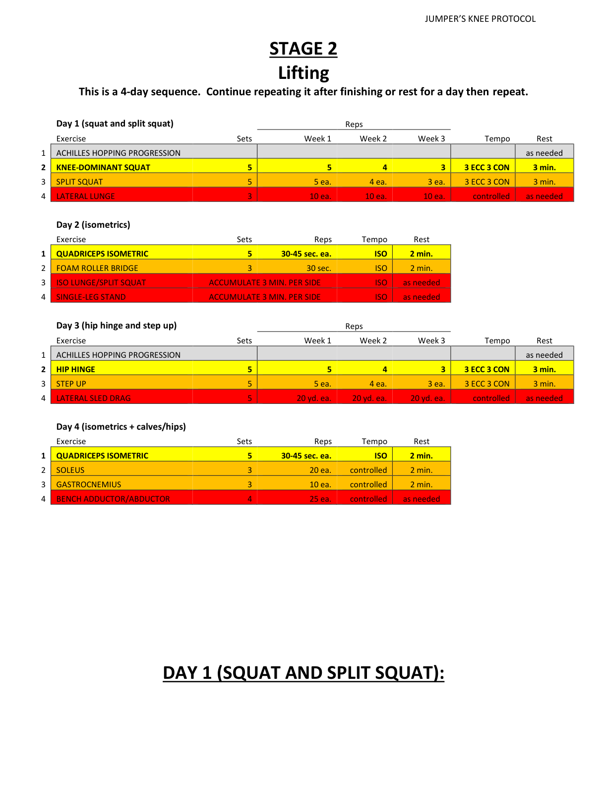
Extracted Text
JUMPER’S KNEE PROTOCOL
STAGE 2
Lifting
This is a 4-day sequence. Continue repeating it after finishing or rest for a day then repeat.
Day 1 (squat and split squat)
Reps
Exercise
Sets
Week 1
Week 2
Week 3
Tempo
Rest
1
ACHILLES HOPPING PROGRESSION
as needed
2
KNEE-DOMINANT SQUAT
5
5
4
3
3 ECC 3 CON
3 min.
3
SPLIT SQUAT
5
5 ea.
4 ea.
3 ea.
3 ECC 3 CON
3 min.
4
LATERAL LUNGE
3
10 ea.
10 ea.
10 ea.
controlled
as needed
Day 2 (isometrics)
Exercise
Sets
Reps
Tempo
Rest
1
QUADRICEPS ISOMETRIC
5
30-45 sec. ea.
ISO
2 min.
2
FOAM ROLLER BRIDGE
3
30 sec.
ISO
2 min.
3
ISO LUNGE/SPLIT SQUAT
ACCUMULATE 3 MIN. PER SIDE
ISO
as needed
4
SINGLE-LEG STAND
ACCUMULATE 3 MIN. PER SIDE
ISO
as needed
Day 3 (hip hinge and step up)
Reps
Exercise
Sets
Week 1
Week 2
Week 3
Tempo
Rest
1
ACHILLES HOPPING PROGRESSION
as needed
2
HIP HINGE
5
5
4
3
3 ECC 3 CON
3 min.
3
STEP UP
5
5 ea.
4 ea.
3 ea.
3 ECC 3 CON
3 min.
4
LATERAL SLED DRAG
5
20 yd. ea.
20 yd. ea.
20 yd. ea.
controlled
as needed
Day 4 (isometrics + calves/hips)
Exercise
Sets
Reps
Tempo
Rest
1
QUADRICEPS ISOMETRIC
5
30-45 sec. ea.
ISO
2 min.
2
SOLEUS
3
20 ea.
controlled
2 min.
3
GASTROCNEMIUS
3
10 ea.
controlled
2 min.
4
BENCH ADDUCTOR/ABDUCTOR
4
25 ea.
controlled
as needed
DAY 1 (SQUAT AND SPLIT SQUAT):
Page 14
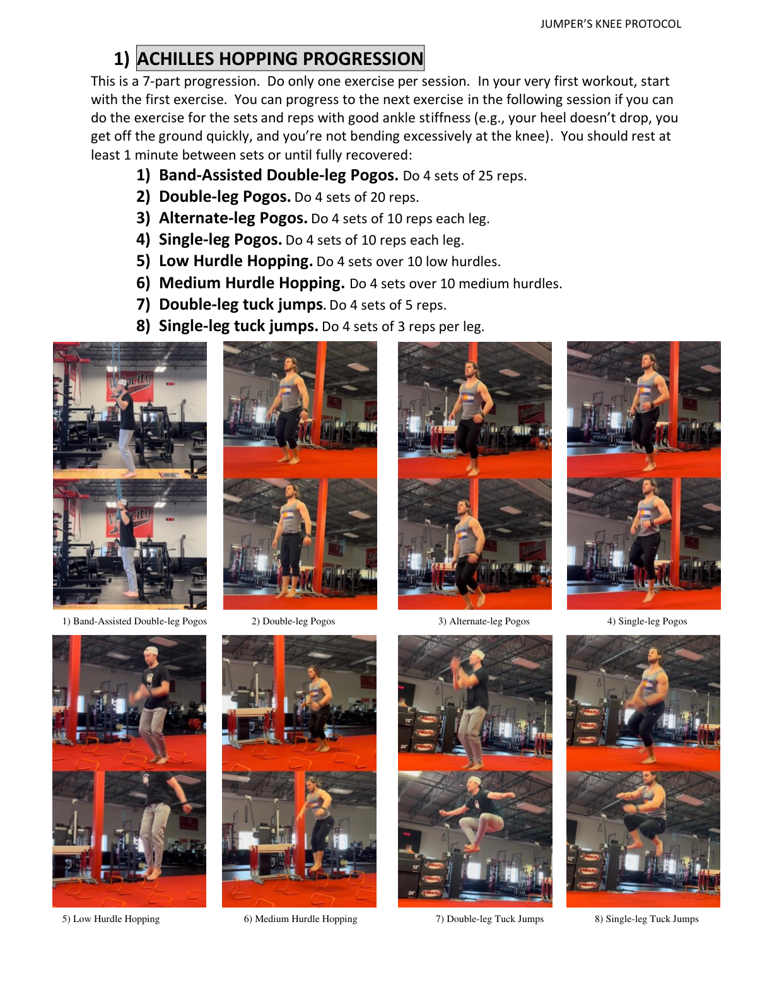
Extracted Text
JUMPER’S KNEE PROTOCOL
1) ACHILLES HOPPING PROGRESSION
This is a 7-part progression. Do only one exercise per session. In your very first workout, start
with the first exercise. You can progress to the next exercise in the following session if you can
do the exercise for the sets and reps with good ankle stiffness (e.g., your heel doesn’t drop, you
get off the ground quickly, and you’re not bending excessively at the knee). You should rest at
least 1 minute between sets or until fully recovered:
1) Band-Assisted Double-leg Pogos. Do 4 sets of 25 reps.
2) Double-leg Pogos. Do 4 sets of 20 reps.
3) Alternate-leg Pogos. Do 4 sets of 10 reps each leg.
4) Single-leg Pogos. Do 4 sets of 10 reps each leg.
5) Low Hurdle Hopping. Do 4 sets over 10 low hurdles.
6) Medium Hurdle Hopping. Do 4 sets over 10 medium hurdles.
7) Double-leg tuck jumps. Do 4 sets of 5 reps.
8) Single-leg tuck jumps. Do 4 sets of 3 reps per leg.
1) Band-Assisted Double-leg Pogos
2) Double-leg Pogos
3) Alternate-leg Pogos
4) Single-leg Pogos
5) Low Hurdle Hopping
6) Medium Hurdle Hopping
7) Double-leg Tuck Jumps
8) Single-leg Tuck Jumps
Embedded Images
Page 15
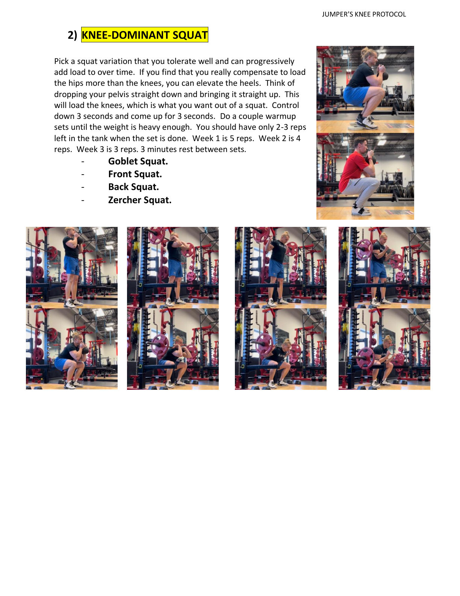
Extracted Text
JUMPER’S KNEE PROTOCOL
2) KNEE-DOMINANT SQUAT
Pick a squat variation that you tolerate well and can progressively
add load to over time. If you find that you really compensate to load
the hips more than the knees, you can elevate the heels. Think of
dropping your pelvis straight down and bringing it straight up. This
will load the knees, which is what you want out of a squat. Control
down 3 seconds and come up for 3 seconds. Do a couple warmup
sets until the weight is heavy enough. You should have only 2-3 reps
left in the tank when the set is done. Week 1 is 5 reps. Week 2 is 4
reps. Week 3 is 3 reps. 3 minutes rest between sets.
-
Goblet Squat.
-
Front Squat.
-
Back Squat.
-
Zercher Squat.
Embedded Images
Page 16
Extracted Text
JUMPER’S KNEE PROTOCOL
3) SPLIT SQUAT
Pick a split squat variation that you tolerate well and can progressively add load to over time.
The front knee should always bend to around 90 degrees. The knee can remain over the ankle
when the patellar tendon is really sore, but if it’s not, you can push the knee a bit over the toes.
As with the squat, think of dropping your hips straight down and bringing them straight up.
Control down 3 seconds and come up for 3 seconds. Do a couple warmup sets until the weight
is heavy enough. You should have only 2-3 reps left in the tank when the set is done. Week 1 is
5 reps each side. Week 2 is 4 reps each side. Week 3 is 3 reps each side. 3 minutes rest
between sets.
-
Front Foot Elevated Split Squat.
-
Split Squat.
-
Rear Foot Elevated Split Squat.
Embedded Images
Page 17
Extracted Text
JUMPER’S KNEE PROTOCOL
4) LATERAL LUNGE
Hold only one weight in the inside hand. Step to the side, sit back, bend the knee, keep the
chest up. Try to keep the sternum over the knee and the knee over the ankle. Push back
through the foot, coming back to center and repeating again. This is not an exercise to load
heavy, it’s to get internal rotation of the hip and pronation of the foot. 3 sets of 10 reps each.
Don’t worry about progressively overloading, just try to keep the movement smooth with the
sternum-knee-foot relationship. If you take too big of a step, it will be difficult to keep those
areas lined up. In that case, take a small step until your range of motion opens up. You should
feel the adductors (groin) working with each rep. Rest as needed between sets.
DAY 2 (ISOMETRICS):
Same as the isometric day covered in Stage 1.
Embedded Images
Page 18
Extracted Text
JUMPER’S KNEE PROTOCOL
DAY 3 (HIP HINGE AND STEP UP):
1) ACHILLES HOPPING PROGRESSION
Same progression as covered in day 1. Move through the progression as pain and function
allow.
2) HIP HINGE
Pick a hip hinge variation that you tolerate well and can progressively add load to over time.
Keep a slight knee bend the entire set and hinge back with the hips. You should feel a good
stretch in the glutes and hamstrings on the way down. Same tempo, sets, reps, rest, as day 1
squats and split squats.
-
Barbell RDL.
-
DB/KB RDL.
-
Trap Bar Deadlift.
Embedded Images
Page 19
Extracted Text
JUMPER’S KNEE PROTOCOL
3) STEP UP
Pick a step up variation that you tolerate
well and can progressively add load to
over time. Try to keep the starting knee
bend around 60-degrees. Stand up and
lower without letting the knee snap back
or extend excessively. Keep the knee
soft through the set. Same tempo, sets,
reps, rest, as day 1 squats and split
squats.
-
Front Step Up.
-
Side Step Up.
4) LATERAL SLED DRAG
Similar to the lateral lunge in day 1, this
exercise will get some hip internal rotation and
pronation of the foot. Go a distance of about
20 yards each side. It shouldn’t be so heavy
that you feel it difficult to internally rotate the
hip and get a good pronation push with the
foot. Take smaller steps if needed and make
them larger as your range opens up. Rest as
needed between sets.
Embedded Images
Page 20
Extracted Text
JUMPER’S KNEE PROTOCOL
DAY 4 (ISOMETRICS + CALVES/HIPS):
1) QUADRICEPS ISOMETRIC
Same as covered before.
2) SOLEUS
Do a bent knee calf raise on a machine or with
a weight held on the knee. One leg at a time.
3 sets of 20 each side. Just control the reps so
the soleus muscle experiences fatigue towards
the end of the set. Rest 2 minutes between
sets.
3) GASTROCNEMIUS
Do a straight knee calf raise on a machine or with weight.
Hold onto something for balance. One leg at a time. 3
sets of 10 each side. Controlled tempo, making sure the
gastroc gets fatigued. Rest 2 minutes between sets.
4) BENCH ADDUCTOR/ABDUCTOR
One knee on the bench, 25 reps each adductor raise. Switch to both legs up on the bench, 25
reps each abductor raise. 4 sets. Rest as needed between sets.
Embedded Images
Page 21
Extracted Text
JUMPER’S KNEE PROTOCOL
Troubleshooting Stage 2 Lifting:
In Stage 1, zero to minimal patellar tendon stress activities were allowed. Now that you’re in
Stage 2, you can push the intensity a bit more to keep working on sport skills:
-
Standing basketball shots can now become shots on the move.
-
Light straight line soccer dribbling can now become dribbling around cones.
-
Easy skipping for a jumper can now become a bit more intense.
If pain increases from these, regress. You can do whatever upper body training you want.
For the strength exercises, it is a 3-week sequence of sets/reps. If you complete the 3-weeks
and you still need more time in Stage 2 Lifting because pain is still high and/or you’re still weak,
start over at week one. Keep repeating this until you hit the criteria for progression listed at
the bottom of this page.
Warmup for Isometric days follow the same recommendation as listed in Stage 1 Isometrics.
Since Lifting days start with the Achilles Hopping Progression, you should warmup a bit more to
prepare for that. This is also a good chance to get more low-level store-and-release work out of
your lower body. Do this:
-
Jog 100 yards
-
Backwards jog 100 yards
-
Shuffle 100 yards each
-
Carioca 100 yards each
-
Skip 100 yards
Or, if you have training partners, play spikeball until warm. This will get unconscious, low-level
spring activity from the Patellar and Achilles tendons.
Outside of the Achilles Hopping Progression (which needs to be done in order as pain and
function allow), you can alternate strength exercises between sessions if you prefer. Squats,
split squats, hip hinges, step ups can all be interchanged or kept the exact same. There are pros
and cons to either choice. See what works for you, just make sure you’re consistently getting
stronger over the weeks.
Tempo:
The suggested tempo to strengthen muscle and to continue tendon stress relaxation is the 3-
seconds eccentric and 3-seconds concentric. You should always begin your lifting phase with
this slow tempo. If you are tolerating this well and gaining strength, you have two options:
-
Continue with the Health Tempo (3 seconds down, 3 seconds up). Use this if you
have a very bad tendon and need to be extremely cautious with loading.
-
Switch into a more Performance Tempo (controlled down, explosive up). Use
this if you are making good progress in your rehab and are looking to push things a bit
harder. Keeping the reps and sets the same, you will be able to use a heavier weight
with this tempo since the set won’t last as long.
Page 22
Extracted Text
JUMPER’S KNEE PROTOCOL
WHEN TO PROGRESS
BENCHMARKS TO ENTER STAGE 3 STORE-AND-RELEASE:
• Next day pain is regularly at a 3/10 or less, using either:
➢ How you feel in the morning
➢ Pain-provocation test
• Improvements in Quadriceps, Calves, and Entire Leg function:
➢ Your KNEE-DOMINANT SQUAT and HIP HINGE numbers have noticeably improved
(research recommends at least 1.5 times bodyweight for an estimated squat max).
➢ Your SPLIT SQUAT and STEP UP have also improved and are consistent side-to-side.
➢ You can perform the LATERAL LUNGE and LATERAL SLED DRAG without much restriction
in range of motion (e.g., hips internally rotate, and feet pronate well).
• Elite-level Hopping ability:
➢ You have completed the ACHILLES HOPPING PROGRESSION and can perform single-leg
tuck jumps with good ankle stiffness and confidence.
You will still use this same lifting workout for the subsequent stages. For the knee-dominant
squat and hip hinge, continue to get stronger. Same for the split squat, step up, soleus, and
gastroc. For the lateral lunge and lateral sled drag, continue to make improvements in hip
internal rotation and foot pronation. For the achilles hopping progression (once you hit the last
progression), start it over at the first exercise and run through it again in the same sequence.
Embedded Images
Page 23
Extracted Text
JUMPER’S KNEE PROTOCOL
STAGE 3
Store-And-Release
This is a 6-day sequence. Continue repeating it after finishing or rest for a day then repeat.
Day 1 (store-and-release)
Exercise
Sets
Reps
Tempo
Rest
1
LANDING PROGRESSION
as needed
2
JUMPING PROGRESSION
as needed
3
ACCELERATION/DECELERATION
as needed
4
CHANGE OF DIRECTION
as needed
Day 2 (isometrics)
Exercise
Sets
Reps
Tempo
Rest
1
QUADRICEPS ISOMETRIC
5
30-45 sec. ea.
ISO
2 min.
2
FOAM ROLLER BRIDGE
3
30 sec.
ISO
2 min.
3
ISO LUNGE/SPLIT SQUAT
ACCUMULATE 3 MIN. PER SIDE
ISO
as needed
4
SINGLE-LEG STAND
ACCUMULATE 3 MIN. PER SIDE
ISO
as needed
Day 3 (squat and split squat)
Reps
Exercise
Sets
Week 1
Week 2
Week 3
Tempo
Rest
1
ACHILLES HOPPING PROGRESSION
as needed
2
KNEE-DOMINANT SQUAT
5
5
4
3
3 ECC 3 CON
3 min.
3
SPLIT SQUAT
5
5 ea.
4 ea.
3 ea.
3 ECC 3 CON
3 min.
4
LATERAL LUNGE
3
10 ea.
10 ea.
10 ea.
controlled
as needed
Day 4 (store-and-release)
Exercise
Sets
Reps
Tempo
Rest
1
LANDING PROGRESSION
as needed
2
JUMPING PROGRESSION
as needed
3
ACCELERATION/DECELERATION
as needed
4
CHANGE OF DIRECTION
as needed
Day 5 (isometrics + calves)
Exercise
Sets
Reps
Tempo
Rest
1
QUADRICEPS ISOMETRIC
5
30-45 sec. ea.
ISO
2 min.
2
SOLEUS
3
20 ea.
controlled
2 min.
3
GASTROCNEMIUS
3
10 ea.
controlled
2 min.
4
BENCH ADDUCTOR/ABDUCTOR
4
25 ea.
controlled
as needed
Day 6 (hip hinge and step up)
Reps
Exercise
Sets
Week 1
Week 2
Week 3
Tempo
Rest
1
ACHILLES HOPPING PROGRESSION
as needed
2
HIP HINGE
5
5
4
3
3 ECC 3 CON
3 min.
3
STEP UP
5
5 ea.
4 ea.
3 ea.
3 ECC 3 CON
3 min.
4
LATERAL SLED DRAG
5
20 yd. ea.
20 yd. ea.
20 yd. ea.
controlled
as needed
Page 24
Extracted Text
JUMPER’S KNEE PROTOCOL
DAY 1 (STORE-AND-RELEASE):
What follows is a general recommendation for going about the Store-And-Release Day. Stage 1
Isometrics and Stage 2 Lifting are similar across the board for all athletes. Stage 3 Store-And-
Release is much more individual.
The patterns affected by patellar tendinopathy are landing, jumping, acceleration/deceleration,
and change of direction. Some athletes need more of some and less of others. For example:
-
A high jumper’s program will include a lot of jumping and acceleration
-
A soccer player’s program will include a lot of acceleration, deceleration, and change of direction
-
A basketball player’s program will include a lot of everything
-
An American football punter’s program will include kicking variations
-
A tennis player’s program will include a lot of change of direction and deceleration
-
A Powerlifter will not need to do this phase because they only lift
This Store-And-Release program will address mostly everything an athlete will need. But if you
feel you need more specific preparation to get back to sport, tweak the exercises and
progressions to meet your demands.
What follows are 12 workouts. If you complete workout #1 with what you feel is good
technique (Function) and it doesn’t hurt more the following day (Pain), then you can progress
to workout #2 in the following Store-And-Release session. If you do not perform the workout
with good function and/or you get increased pain the following day, stay at that given workout
for another session until you can do it with good function and no pain increase.
The progressions are explained first, and the twelve individual workouts are explained later.
Page 25
Extracted Text
JUMPER’S KNEE PROTOCOL
Store-And-Release progressions are done in a gradual manner to improve patellar tendon
function without causing flare ups. Each category progresses from low (e.g., 50% efforts) to
high (e.g., 90-100% efforts) intensity and from high (e.g., 80 jumps, 600 yards) to low (e.g., 20
jumps, 150 yards) volume. Outside of this, there are other things done to slowly increase
patellar tendon stress (noted in parenthesis), they are listed here:
1) LANDING PROGRESSION
-
Bilateral Land (very low)
-
Split Land (low)
-
Staggered Land (medium)
-
Unilateral Land (high)
2) JUMPING PROGRESSION
-
Band-Assisted Jump (very low)
-
Seated Jump (low)
-
Standing Jump (medium)
-
Approach Jump (high)
3) ACCELERATION/DECELERATION
-
Tempo Intervals (very low)
-
Flying Sprints (low)
-
Accel/Decel 70% (medium)
-
Accel/Decel 90-100% (high)
4) CHANGE OF DIRECTION (COD)
-
45-degrees (low)
-
90-degrees (medium)
-
180-degrees small area (medium)
-
180-degrees big area (high)
Embedded Images
Page 26
Extracted Text
JUMPER’S KNEE PROTOCOL
WORKOUT 1
LANDING
Bilateral Trap Bar/DB Land. 3 sets 5 reps.
Stand tall, drop down to a position of around
60- to 90-degrees of knee flexion and hold for
2-seconds. Stand back up and repeat. You
should get even bending through the ankles,
knees, and hips.
JUMPING
Band-Assisted Jump (50% jump). 4 sets 20 reps.
Grab onto bands or something that will unload your
bodyweight to a degree. Squat down to about 60- to
90-degrees of knee flexion and do a 50% effort jump.
Jump continuously for 20 reps.
ACCEL/DECEL
Tempo Intervals (70% speed). 6 sets 60 yards.
Set up four cones spaced 20 yards
apart. Start at the first and slowly
accelerate to 70% speed, you
should be at that speed by the
time you hit the second cone.
Hold that speed until the third
cone and then slowly decelerate
to a stop by the fourth cone.
COD
45-Degree Zig Zag (70% speed). 5 sets ea. way 3 cuts.
Set up 5 cones spaced 5
yards apart at a 45-degree
angle. Run through the
pattern going 70% speed.
Make sure you can cut
confidently off both sides.
Do equal sets going both
directions.
Embedded Images
Page 27
Extracted Text
JUMPER’S KNEE PROTOCOL
WORKOUT 2
LANDING
Bilateral Trap Bar/DB Land. 3 sets 5 reps.
Try to increase the load in this session.
JUMPING
Seated Box Jump (50% jump). 4 sets 10 reps.
Pick a 12- to 18-inch box to sit on with another box in front that is slightly
higher. From a seated position, explode up onto the box. Land in 60- to
90-degrees of knee flexion. Step down, reset, and repeat.
ACCEL/DECEL
Tempo Intervals (70% speed). 8 sets 60 yards.
Same as previous workout with 8
sets instead of 6.
COD
90-Degree Box (70% speed). 5 sets ea. way 3 cuts.
Set up four cones spaced 5 yards
apart in a box. Run through the
pattern going 70% speed. Make
sure you can cut confidently off
both sides. Do equal sets going
both directions.
Embedded Images
Page 28
Extracted Text
JUMPER’S KNEE PROTOCOL
WORKOUT 3
LANDING
Bilateral Trap Bar/DB Land. 3 sets 5 reps.
Try to increase the load in this session.
JUMPING
Standing Box Jump (50% jump). 4 sets 10 reps.
Pick a box you can comfortably jump onto while landing in 60- to 90-
degrees of knee flexion. From a standing position, explode up onto the
box. Step down, reset, and repeat.
ACCEL/DECEL
Tempo Intervals (70% speed). 10 sets 60 yards.
Same as previous workout with 10
sets instead of 8.
COD
180-Degree 5-10-5 (70% speed). 5 sets ea. way 2 cuts.
Set up three cones spaced 5 yards
apart in a box. Start at the middle
cone, run towards an outside cone,
cut, run through the middle cone
and to the other outside cone, cut,
and run back through the middle
cone. Go at 70%. For the next set,
start by going the other direction.
Then repeat. Make sure you can
cut confidently off both sides.
Embedded Images
Page 29
Extracted Text
JUMPER’S KNEE PROTOCOL
WORKOUT 4
LANDING
DB Split Land. 3 sets 5 ea.
Grab two dumbbells. From a standing position, quickly drop down and
land in a split stance. Hold for 2-seconds. Stand back up and repeat on
the other side.
JUMPING
Continuous Squat Jump (50% jump). 4 sets 10 reps.
From a standing position, jump up at 50% effort, land in around 60- to 90-
degrees of knee flexion with good bend at the knee/ankle/hip, jump up
again and repeat for 10 reps.
ACCEL/DECEL
Flying Sprints (90-100% speed). 3 sets 20 accel, 10 hold, 30 decel.
Set up four cones. The first two,
spaced 20 yards apart. The
third spaced 10 yards from the
second and the fourth spaced
30 yards from the third. You
will use the first 20 yards to
build up to a 90-100% sprint,
hold it for 10 yards, then
decelerate for the next 30 yards to the last cone.
COD
180-Degree 10-20-10 (70% speed). 5 sets ea. way 2 cuts.
The same as last session’s 5-10-
5, but the cones are now spaced
10 yards apart instead of 5.
Embedded Images
Page 30
Extracted Text
JUMPER’S KNEE PROTOCOL
WORKOUT 5
LANDING
DB Split Land. 3 sets 5 ea.
Try to increase the load this session.
JUMPING
Approach Box Jump (50% jump). 4 sets 5 ea.
Pick a box you can comfortably jump onto while landing in around 60- to
90-degrees of knee flexion. From a standing position, take one step
forward, plant, and explode up onto the box. Step down, go back to the
start position, and switch the approach style to push off the opposite leg,
plant, then jump. Repeat for 5 reps each side.
ACCEL/DECEL
Flying Sprints (90-100% speed). 4 sets 20 accel, 10 hold, 30 decel.
Same as previous workout with
4 sets instead of 3.
COD
45-Degree Zig Zag (90% speed). 4 sets ea. way 3 cuts.
Same as workout 1.
Intensity has changed to
90% instead of 70% and sets
are 1 less each way.
Embedded Images
Page 31
Extracted Text
JUMPER’S KNEE PROTOCOL
WORKOUT 6
LANDING
DB Split Land. 3 sets 5 ea.
Try to increase the load this session.
JUMPING
Continuous Approach Jump (50% jump). 4 sets 5 ea.
Get in an area with open space. Just like the approach box jumps last
session, take the same step forward, plant, jump, land, then repeat. You
will be moving forward down a path. Do all reps with one plant, turn
around, and do the other plant going back. If you are a single-leg jumper,
you can do this variation as a single-leg jump instead of double-leg.
ACCEL/DECEL
Flying Sprints (90-100% speed). 5 sets 20 accel, 10 hold, 30 decel.
Same as previous workout with 5 sets
instead of 4.
COD
90-Degree Box (90% speed). 4 sets ea. way 3 cuts.
Same as workout 2. Intensity has
changed to 90% instead of 70%
and sets are 1 less each way.
Embedded Images
Page 32
Extracted Text
JUMPER’S KNEE PROTOCOL
WORKOUT 7
LANDING
Staggered Depth Drop. 3 sets 5 ea.
Find something to drop off. Land in a
staggered position with most of the
weight on the front leg, at 60- to 90-
degrees of knee flexion. Hold for 2-
seconds, repeat for 5 reps on each side.
JUMPING
Band-Assisted Jump (100% jump). 4 sets 10 reps.
Same as workout 1 but now at 100%. Continuous.
ACCEL/DECEL
Accel/Decel (70% speed). 6 sets 10 accel, 5 decel.
Set up three cones. The first two
spaced 10 yards apart and the third
spaced 5 yards from the second. Start
at the first cone, accelerate as quickly
as possible to 70% speed. Once you hit
the second cone, start decelerating so
you can come to a stop by the third
cone. You can vary start and stop
positions with each rep.
COD
180-Degree 5-10-5 (90% speed). 4 sets ea. way 2 cuts.
Same as workout 3. Intensity has
changed to 90% instead of 70%
and sets are 1 less each way.
Embedded Images
Page 33
Extracted Text
JUMPER’S KNEE PROTOCOL
WORKOUT 8
LANDING
Staggered Depth Drop. 3 sets 5 ea.
Try to increase the height of the fall.
JUMPING
Seated Box Jump (100% jump). 4 sets 5 reps.
Same as workout 2 but now at 100% so you can raise the height of the
box you’re jumping on to.
ACCEL/DECEL
Accel/Decel (70% speed). 8 sets 10 accel, 5 decel.
Same as last workout but now sets
are 8 instead of 6.
COD
180-Degree 10-20-10 (90% speed). 4 sets ea. way 2 cuts.
Same as workout 4. Intensity has
changed to 90% instead of 70% and
sets are 1 less each way.
Embedded Images
Page 34
Extracted Text
JUMPER’S KNEE PROTOCOL
WORKOUT 9
LANDING
Staggered Depth Drop. 3 sets 5 ea.
Try to increase the height of the fall.
JUMPING
Standing Box Jump (100% Jump). 4 sets 5 reps.
Same as workout 3 but now intensity is 100% so you can raise the height
of the box you’re jumping on to.
ACCEL/DECEL
Accel/Decel (70% speed). 10 sets 10 accel, 5 decel.
Same as last workout but now sets
are 10 instead of 8.
COD
45-Degree Zig Zag (100% speed). 3 sets ea. way 3 cuts.
Same as workout 5.
Intensity has changed to
100% instead of 90% and
sets are 1 less each way.
Embedded Images
Page 35
Extracted Text
JUMPER’S KNEE PROTOCOL
WORKOUT 10
LANDING
Bilateral Jump to Unilateral Land. 3 sets 5 ea.
Stand there, jump up off two legs, and land on one leg, holding for 2-
seconds. Make sure there is an even bend at the ankle, knee, and hip.
Start with low jumps until comfortable. 5 reps each side.
JUMPING
Continuous Squat Jump (100% jump). 4 sets 5 reps.
Same as workout 4 but now intensity is 100%.
ACCEL/DECEL
Accel/Decel (90-100% speed). 6 sets 10 accel, 5 decel.
Same as the accels and decels
from the last three workouts
but now the intensity is 90-
100%. Continue to change the
starting positions between sets,
you can time these sprints if it
makes you more motivated.
COD
90-Degree Box (100% speed). 3 sets ea. way 3 cuts.
Same as workout 6. Intensity has
changed to 100% instead of 90% and
sets are 1 less each way.
Embedded Images
Page 36
Extracted Text
JUMPER’S KNEE PROTOCOL
WORKOUT 11
LANDING
Bilateral Jump to Unilateral Land. 3 sets 5 ea.
Try to increase the height of the jump.
JUMPING
Approach Box Jump (100% jump). 4 sets 3 ea.
Same as workout 5 but now intensity is 100% so you can raise the height
of the box you’re jumping on to.
ACCEL/DECEL
Accel/Decel (90-100% speed). 8 sets 10 accel, 5 decel.
Same as last workout but now sets
are 8 instead of 6.
COD
180-Degree 5-10-5 (100% speed). 3 sets ea. way 2 cuts (3 cones).
Same as workout 7. Intensity has
changed to 100% instead of 90%
and sets are 1 less each way.
Embedded Images
Page 37
Extracted Text
JUMPER’S KNEE PROTOCOL
WORKOUT 12
LANDING
Bilateral Jump to Unilateral Land. 3 sets 5 ea.
Try to increase the height of the jump.
JUMPING
Continuous Approach Jump (100% jump). 4 sets 3 ea.
Same as workout 6 but now intensity is 100%.
ACCEL/DECEL
Accel/Decel (90-100% speed). 10 sets 10 accel, 5 decel.
Same as last workout but now sets
are 10 instead of 8.
COD
180-Degree 10-20-10 (100% speed). 3 sets ea. way 2 cuts (3 cones).
Same as workout 8. Intensity
has changed to 100% instead of
90% and sets are 1 less each
way.
Embedded Images
Page 38
Extracted Text
JUMPER’S KNEE PROTOCOL
DAY 2 (ISOMETRICS):
Same as the isometric day covered in Stage 1.
DAY 3 (SQUAT AND SPLIT SQUAT):
Same as the squat and split squat lifting day covered in Stage 2.
DAY 4 (STORE-AND-RELEASE):
Same as day 1 earlier this week. Progress as pain and function allow.
DAY 5 (ISOMETRICS + CALVES/HIPS):
Same as the isometric + calves/hips day covered in Stage 2.
DAY 6 (STORE-AND-RELEASE):
Same as the hip hinge and step up day covered in Stage 2.
Page 39
Extracted Text
JUMPER’S KNEE PROTOCOL
Troubleshooting Stage 3 Store-And-Release:
Minimal stress sport skill activities were allowed in Stage 2. Now that you’re in Stage 3, you can
make these changes to continue progressing with sport:
-
Basketball shots on the move can become shots against a defender.
-
Soccer dribbling around cones can now become dribbling against a defender.
-
Skipping for a jumper can become light bounding.
The level of effort will depend on what you’re ready to handle. If pain increases from these
changes, pull back the intensity or go back to the well-tolerated movement you did in Stage 2.
You have free reign on upper body training.
Warmup the same as you would do for the Achilles Hopping progression. Running variations
for distance, a low-level game like spikeball, etc. Just make sure you’re completely warm and
the lower body feels ready for store-and-release movements.
For every exercise, do 2-3 warmup sets where you go through the motion of the exercise at a
lower intensity.
Rest as long as needed between sets. In the first 6 workouts or so, you probably won’t need as
much rest because the intensity is 50-70%. 1-2 minutes should be enough. In the last 6
workouts or so, you will probably need more rest because the intensity is 90-100%. 2-3
minutes will probably be right.
The weekly setup goes 1) Store-And-Release, 2) Isometrics, and 3) Lifting. This is because day 1
is most likely to provoke pain and discomfort the following day, so isometrics can settle this. By
day 3, you should be feeling pretty good to do lifting and then ready for day 1 again. If you are
not ready, you can take a rest day or do another isometric day while you wait to feel ready. If
you have setbacks, don’t panic. They’re a normal part of Stage 3.
In the latter half of your Stage 3, you should really be using the sporting implement as much as
possible. Add it into your jumping, landing, accelerating, decelerating, and changing direction
movements to further prepare you for Stage 4 Return to Sport.
Embedded Images
Page 40
Extracted Text
JUMPER’S KNEE PROTOCOL
WHEN TO PROGRESS
BENCHMARKS TO ENTER STAGE 4 RETURN TO SPORT:
• Next day pain is regularly at a 3/10 or less, using either:
➢ How you feel in the morning
➢ Pain-provocation test
• You can confidently perform LANDING, JUMPING, ACCELERATION/DECELERATION, and
CHANGE OF DIRECTION movements that closely mirror the demands of your sport and
there is not much difference side-to-side.
You want to get back to the point of “thoughtless, fearless movement” – Louis Gifford, 2005.
Embedded Images
Page 41
Extracted Text
JUMPER’S KNEE PROTOCOL
STAGE 4
Return to Sport
There is no weekly workout for this phase, just suggestions.
If you made the ending of your Stage 3 Store-And-Release program replicate the demands of
sport, you should be good to go. When returning to sport:
-
Keep the same weekly sequence (Day 1 Store-And-Release, Day 2 Isometrics, Day
3 Lifting) but replace your Store-And-Release day with the sport practice/competition.
-
If that’s not possible, try to manage sport loads so there is no more than 3 high-
intensity training/competition days in a week (a principle of elite sport in their first year
of return from patellar tendinopathy).
-
At least twice per week, maintain Stage 2 Lifting exercises (e.g., squats, hip
hinges, step ups, split squats).
-
Continue Stage 1 Isometric exercises as needed (e.g., before or after training, on
a day off from sport).
-
For the rest of your athletic career, keep tabs on next day pain. Take immediate
action to decrease training volume/intensity if pain responses increase.
Embedded Images
Page 42
Extracted Text
JUMPER’S KNEE PROTOCOL
10 Things to Keep in Mind
1) The Brain deficit. You need to spend enough time with isometrics (and visual,
auditory, sensory tools) to normalize the brain’s inhibition and activation.
2) The Muscle deficit. You need to spend enough time strengthening your muscles
with lifting (e.g., squats, split squats, hip hinges, step ups, calf raises).
3) The Soleus-Hamstring deficit. You need to get good at developing co-contractions
around the knee (e.g., foam roller bridge, hopping progression).
4) The Hopping deficit. You need to develop the ankle/foot/Achilles. If that area has a
deficit, the knee will be forced to deal with it and you’ll likely have setbacks.
5) Eat right. You get tendon and muscle adaptations when you recover from training.
Eat enough protein (~1 gram per pound bodyweight per day) from a variety of
sources. Eat enough carbohydrates and fats to provide you energy. Specifically for
tendons, consume some proteins higher in proline and glycine (e.g., collagen) and
make sure you get enough vitamin C (e.g., oranges).
6) Sleep enough. There is some evidence in vitro and in animal models that tendon
accumulates damage throughout the day and cleans itself up at night. When the
circadian rhythm is interrupted, this can cause issues with tendon clean up and
could potentially be the start of tendinopathy. Try to stay consistent with sleep-and-
wake times and get ~8 hours per night.
7) Move enough. A Jumper’s Knee Protocol training sessions lasts ~1 hour. If you lay
on the couch the other 23 hours, do you think that’s going to help you? Probably
not. Motion is lotion and chronically high blood sugar (potentially from a sedentary
lifestyle) can negatively impact tendon health. Get 10,000 steps per day.
8) Don’t change loads fast. If you go from 0 jumps in one week to 100 jumps the next
week, you will probably blow up your tendon. Be slow with how you change store-
and-release loads.
9) Appreciate the tendon healing process. The tendinopathy continuum says that a
normal tendon goes reactive, then into tendon dysrepair, then into a degenerative
tendon. Along the path, it will tell you how it’s feeling if you listen. Some tendons
take longer to heal than others. If you had an event where you really aggravated the
tendon, the reactive response could last for weeks or months. Tendons don’t have a
set recovery time. Listen to next day pain and give the tendon what it wants.
10) Be aware of psychosocial factors. Look into the biopsychosocial model of pain.
Thoughts, emotions, and behaviors can positively or negatively impact rehab.
Economical, environmental, and cultural factors can do the same.
Watch these videos